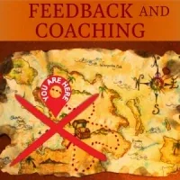
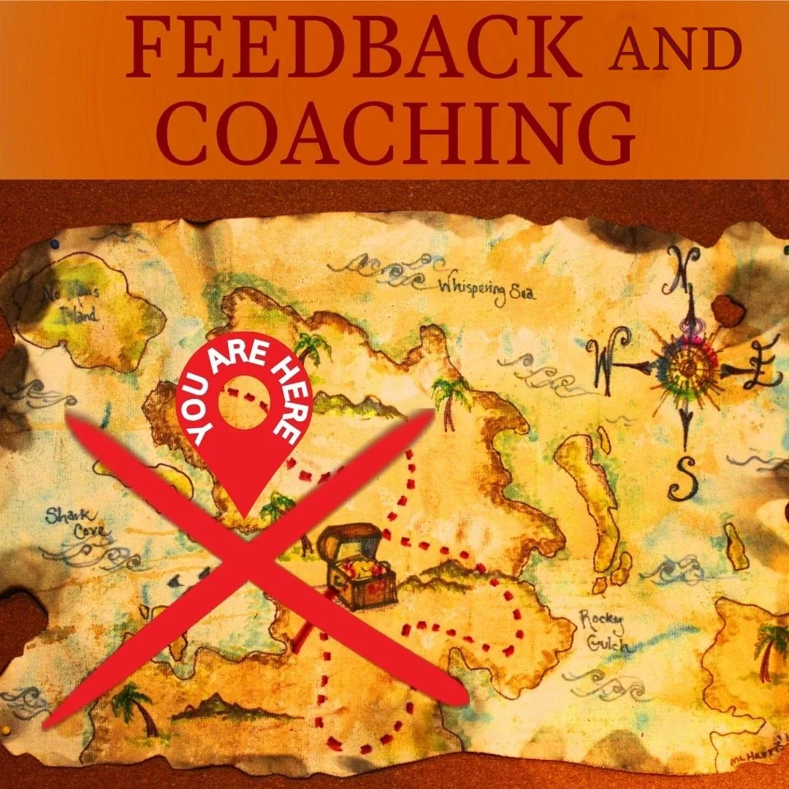
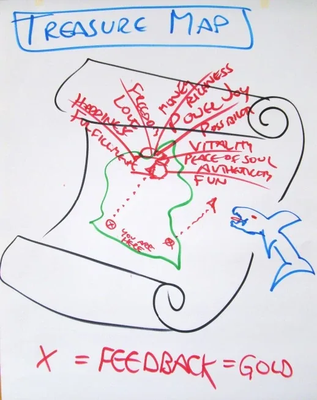
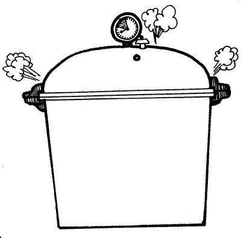

Feedback
and Coaching
- …
Feedback
and Coaching
- …

- Feedback and- Coaching - Rapid Learning Through Pressure- A powerful way to navigate change initiatives, either personally or in your project team, is the three-step ‘Rapid Learning’ process. The purpose of Rapid Learning is to optimally liberate the resources of group intelligence. - Recently we have discovered that there are two forms of Rapid Learning, the original - Rapid Learning Through Pressure, and a new form,- Rapid Learning Through Vacuum- Then we’ll learn the vacuum form. - STEP 1: Planning is insufficient. So,- Go!- Rapid Learning invites you to skip most of your pre-planning efforts and start immediately with - trying something. That is why STEP 1 in Rapid Learning is- Go!- Think about what often happens to your carefully-made plans the moment you actually take an action… Right! Your plans no longer apply! This is because whatever tiny first action you make changes the circumstances in ways that cannot be predicted during the planning stages. - Your extravagant planning efforts may, in fact, be a stalling maneuver. It could be that trying to plan out everything wastes both time and energy, and pushes your nervous system towards depression and burnout because you try not to be where you are: - at a place where it is time to take action even if you have no plans. Trying not to be where you are contributes to burnout by making efforts that do not correspond to reality. It’s like using a lever inside of your house to try to move a rock that is outside in the woods. Instead of making an effort to jump into life you hold back trying to figure everything out beforehand. Can anyone ever figure everything out perfectly? (- No.) As Isaac Asimov asserted,- “To succeed, planning alone is insufficient. One must improvise as well.”- 005- By explaining all this I am NOT saying, “ - Don’t plan.”- You can’t navigate the future until you are in the future, so what about just making the moves that need to be made now? Each move creates new circumstances that inform the wisdom of your next move. - Did you ever plan to - Go!,read books about how to- Go!,wish to- Go!,feel jealous about others who- Go!,make up really good explanations for why you are not- Go!ing… but you don’t- Go!? This is called- being stuck at Go!- Were you ever stuck at - Go!? (- Yes.)- Being stuck at - Go!is your soul hiding out.- In other words, “ - Depression is- hibernating spirit.”- 004- STEP 2: Pressure Arrives:- Beep!- It is easy to imagine that by not - Go!ingyou can avoid STEP 2 in- Rapid Learning Through Pressure, which is to receive- Feedback!- Hesitating as a strategy to avoid feedback is hilarious because the whole Universe is a gigantic feedback generator. You get feedback whether you - Go!or- Stay!So why not do what you really want?- It can make you far more enthusiastic about asking for feedback if you recognize that there are only two kinds of feedback you could possibly receive. The first kind is - Go!This means that what you tried is working, so keep going: return to- Go!and- Go!again.- That may be shocking. If you have invested everything in your efforts and made a gigantic push to - Go!and you succeed, then what you might most want to do at that point is back-off and take a holiday. But if – contrary to your wishes – everyone around you says.- “Keep going!”,then- Go!may be the most challenging kind of feedback to receive! Did this ever happen to you? (- Yes.)- The second kind of feedback you can be given is - Beep!which simply means that what you tried does not work very well. The results could be better. A- Beep!suggests that it might be worth trying something different.- If you went to school, one of the first things you learned is that - Beep!sare bad. A- Beep!invokes that sinking feeling in your belly when the teacher calls out your name to answer a question. Sadly, one of the biggest take-homes from school is the terror of being- Beep!ed.We learn to lie, cheat, and steal anything to avoid being- Beep!ed.- If you receive a - Beep!and you have the thoughtware wired up in your mind that- Beep!sare bad, then you easily fall into the- Beep! Swamp, notoriously full of dead floating fish, five hundred years of stinking frog-poop, and leeches… those blood-sucking worms… Leeches are the parasitic voices murmuring stories directly into your brain such as,- “I’ll never make it. I’m not good enough. I’m a slob. I am worthless. Nobody loves me. I’m too stupid. I’m too fat and ugly. There is no room for me here. This wasn’t worth it. They have abandoned me. They make it and I don’t. It’s not fair. They don’t see me. Who do those assholes think they are anyway, to give ME feedback! Look at their life!”Please write your three most familiar life-sucking vampire voices here:- _________. - ________. - __________. - The voices are life-sucking because if you listen to them, if you believe they are true – even to a small degree, even for a second – if you give legitimacy to even one deprecating or arrogance-inducing voice in your world, then you have transferred your authority over to an external source: the voice. Without your own authority how can - YOUlive?- Clarity gives you power. If you hear a voice, you are in the Swamp. This is useful information. A voice either criticizes or praises you or others. Even one voice signals that you are definitely in the swamp! That is your “X” on the map. Understanding that when you hear a voice in your head you are in the - Beep! Swampis so effective it can seem magical.- [The magic is that through taking responsibility for being where you are you create the possibility of being somewhere else!]- But when you fall into the - Beep! Swampand you want to get out of it, what should you do? How can you get out… assuming, perhaps naively, that you actually- dowant to get out… which may be a false assumption… Perhaps you would rather- stayin the- Beep! Swampfor a while longer- .- After all, it is soooo familiar. - It may feel self-destructive, but if self-destruction is familiar then you are right at home! - You may even feel powerful in the - Beep! Swampbecause you get to righteously complain, blame other people, justify yourself, make excuses, make intrigue, be resentful, and paddle around in- Beep! Swampslime writhing in a- Poor Meorgy… something you may have grown quite fond of in a perverse sort of way... Maybe you know someone who does this?- But just in case you - dowant to get out of the- Beep! Swamp… I’ll tell you how: First, admit that you are in the- Beep! Swamp. Upon detecting a voice you say to yourself,- “Hey! It’s one of those vampire voices! I am in theBeep! Swamp!- I must have gotten a Beep!”- Take a deep breath, collect your wits, go immediately back to the friend or enemy who gave you the - Beep!, look them straight in the eyes, and with no undertones in your voice, say,- “Thanks for the feedback.”- No further conversation needed. Suddenly you are back in the Rapid Learning cycle. Use the details of the - Beep!as a precise description for which behavior to change to get better results. A- Beep!is a design suggestion for intelligent re-iteration.- STEP 3: Move Your Point of Origin:- Shift!- This takes you to STEP 3 in - Rapid Learning Through Pressure:- Shift!- Shift!means to move your ‘point-of-origin’ – the place from which you are perceiving and deciding things. Shift your interpretations, your plan, your criteria for success, your posture, your focus of attention, your purpose, your velocity of delivery, your intention, your attitude, your intention, your tone of voice...- Shift! something! Anything! Try something completely different.- Here is a fascinating thoughtware upgrade to replace the old thoughtware you might still be implementing from your school days. - STANDARD THOUGHTWARE:- A Beep! is an embarrassing sign of stupidity.- UPGRADED THOUGHTWARE:- A Beep! is a strategy redesign proposal.- Your - Shift!brings you back to- Go!where you immediately implement your new behavior in your next try.- This is Rapid Learning. - Go!- Get your - Feedback.- If the - Feedbackis- Go!say,- “Thanks for the feedback,”and keep- Go!ing.- If the - Feedbackis- Beep!say, “- Thanks for the feedback,”and use the- Beep!to- Shift!your starting point, your style, your rules about how to behave.- Be sure to - Shift!both inside (attitude, old conclusion, story, opinion) as well as outside (timing, tone, gesture, focus, etc.).- Then - Go!again.- Go! Feedback! Shift! Go!You will be using this simple powerful learning procedure for the rest of this book – perhaps the rest of your life!- Thanks for the feedback!- By the way, saying, - “Thanks for the feedback,”when you get a- Go!with the same level of sincerity as when you say,- “Thanks for the feedback,”when you receive a- Beep!makes you reliable to receive positive feedback. If you receive positive feedback as a- complimentor as- praise,then people must- avoidgiving you positive feedback for fear you will merely use it to feed your ego rather than using it to confirm your creativity. Positive feedback is also just feedback, useful info.- Did you ever - Go!and get- Beep!ed, and- Go!again and get- Beep!edagain, and then- Go!again and you keep getting the same- Beep!s? (- Yes.) This is simply because you forgot STEP 3 of Rapid Learning:- Shift!- You gotta - Shift!baby!- Shift!Try something else!- Anythingelse!- Unless you try something - differentyou will stay stuck in a rut, duplicating what already isn’t working! As you may have heard:- the only difference between a rut and a grave is their length. Rather than behaving as creatively as a corpse you might want to- Shift!and- Go!- The magnificent value of - Rapid Learning Through Pressureis that it derives maximum benefit from the intelligences of whoever is on your formal or informal feedback team. This does not have to be people you like. It is simply people who notice what you are doing and have ideas about it. By bringing immediate, direct, ruthlessly-honest feedback and coaching into your team’s context, you create the option of choosing to radically rely on feedback and coaching. Then, when you want to accomplish something –- anything –all you have to do is- Go!while keeping one ear open listening for feedback and coaching from your Rapid Learning team.- If you live in gameworlds that have feedback and coaching woven into their context, - IT DOES NOT MATTER WHAT YOU TRY. As soon as you are in motion your team will more-or-less impartially see how you are doing compared to your stated objectives and will immediately provide you with course-correction details. This is a service you can ongoingly provide for each other to optimize group intelligence. By radically relying on the- Beep!sand- Go!sfrom an empowered feedback-and-coaching team there is nowhere you can’t go.- Certainly, some of the feedback you receive may be projections, jealousy, competition, misunderstandings, fear-based arrogance, revenge, or manipulation. But if you estimate that 80% of the feedback you receive is pure gold, you can let the other 20% roll past you like water off the back of a duck. - Suddenly you stop avoiding people’s feedback and coaching. Instead there arises a deep longing to be connected in to a greater wisdom and you find yourself approaching people, maybe even strangers, maybe even your enemies… and saying, - “Could you please give me feedback about ___.”You may have heard that two heads are better than one! But wait until you try thirteen heads!- Your team’s feedback may not give you the shortest path to your goal because they are not perfectly-wise Beings. But they don’t have to be… and besides, there aren’t any perfectly wise Beings. The feedback and coaching simply needs to be safe-enough-to-try and good-enough-for-now. - [If your project is something that has never been done before (which is quite likely these days…) the optimal path to a valuable outcome is unknown. So just start and rapidly learn as you go.]- If anyone ever asked you to give them feedback and coaching, you know from your own experience of giving feedback and coaching that your own support team is not bored. When you ask them for feedback and coaching, each person’s full-band-width intelligence is thoroughly called into action through ‘parallel play - ’– everyone creating value at the same time. Each coach invents and communicates original clarity and possibilities for you, which keeps them in a state of ecstasy, because 5 Body-creating often feels like being in love! - ### A Possibility Coach giving feedback and coaching to his Client. - How to receive feedback?- Without reacting. - There are 4 answers to that question: - 1. Get so much feedback...- ... that you start experiencing directly the value of it.- Get yourself in a space where you will get so much feedback that you will start experiencing directly, in the moment, the value of feedback. One such space is a 4 or 5-day - Expand The Box Training.- During Expand The Box, each new - thoughtmapis integrated through exercises and practices that provide you with different kind of feedback in all your- 5 bodies(physical, intellectual, emotional, energetic, and archetypal).
- 2. There is a treasure...- ... feedback is your way there.- There is a treasure and your longing is to find it. The treasure is aliveness, connection, vitality, peace of soul, joy, love, freedom, fulfillment, fun, etc... The treasure is somewhere and you are somewhere else. You are where you are. How can you find first, where you are, and second, your way to the treasure? The answer is with feedback and coaching. - Feedback gives you your 'x' on the map. Where you get feedback, it is where you are. This is great news! Because how can you go anywhere if you don't know where you are? - After you 'Shift!' and 'Go!' again (and try something else), the feedback will keep informing you if you are getting close to the treasure or if you are moving farther way from it. It works like the children's game where one person is blinded and their friends guide them to the treasure by shouting 'Hotter! Hotter! Hotter!' or 'Colder! Colder! Colder!'. Hotter = Go!, Colder = Beep! That's all. - The proposal is to change your relationship to feedback from - feedback = attackto- feedback = treasure. - 3. Not all feedback is accurate feedback- There is no good or bad feedback. There is only accurate or inaccurate feedback. - It is useful to know that not all feedback is accurate. On average, from our experience, about 75% of all feedback you get is - accurate- inaccurateTo be clear, because a feedback comes from a projection does not mean it is neither useful nor accurate. A clever Gremlin might hold that every feedback is - in any case - a projection because no one can really know how you experience the world from inside. Therefore, the Gremlin can ignore any piece of feedback given to them. Very clever, and also very isolating. It is a form of breakdown between the person and the outside world.With practice, you will start experiencing directly whether the feedback is useful/accurate or not. The experience is if the feedback 'lands' in you, it is most probably useful. - 4. Be authentically curious about the possible wisdom in where the feedback comes from in that person...- Instead of reacting, be curious.- If someone takes the time, energy and attention to give you feedback, they do it because somewhere they care about you. They want you interaction to be different. If they didn't care, they wouldn't make the efforts to talk to you. - With that clarity, make a vacuum for them to say more about what they want, what they are longing for in your relationship. Ask authentically curious questions such as: 'Can you say more about this?', 'What are you longing for?', 'What would you like instead?' 'I really want to hear what this about for you. I am listening.' - You might be surprise about the space of intimacy you can create when making a vacuum in response to a Pressure Rapid Learning feedback instead of reacting. - OLD AND NEW THOUGHTMAP- of- FEEDBACK AND COACHING- STANDARDTHOUGHTWARE FOR- FEEDBACK- Feedback is to be avoided because it is judgmental, critical, blaming, a put-down, negative, attacking, insulting, hurtful, destructive, arrogant, aggressive, and discouraging. - UPGRADEDTHOUGHTWARE FOR- FEEDBACK:- Feedback is information about the past. - It is a simple report about what happened, what worked, and what did not work from that person’s perspective. - STANDARDTHOUGHTWARE FOR- COACHING- Coaching is to be avoided because it is manipulative, corrective, dominating, motivational “Rah! Rah!," sports metaphors, opinions about - “You should!” “You must!”it forces you to adapt to external authority, and creates dependency on the coach.- UPGRADEDTHOUGHTWARE FOR- COACHING- Coaching is possibilities about the future. - It is one or more distinctions that create clarity about exactly what to try next to get better results. - Here are workable coaching distinctions: - “If you speak in the third person and say ‘you’ or ‘one’ instead of ‘I’ your communication is far less personal and less powerful. When you make ‘I statements’ listeners can feel your own commitment to what you say and can connect to you better.”- Coaching is a distinction combined with a proposal. - Possibility Management recommends that you regularly coach-your-coach by giving them feedback and coaching about their feedback and coaching to you! - Improving Your Feedback And Coaching- As a Spaceholder, as a Possibility Coach, as a Gameworld Consultant, as an Archan... - Here are practices and distinctions to provide the next level of feedback and coaching - written or spoken - given to Rage Club and Fear Club Spaceholders. - Instead of Coaching for Perfection, Coach for their Next- Skill- When providing feedback and coaching, you stay at the same level of practice and context of your client. - Your proposals for them is to keep practicing what they can already do (to some degree) so that they can do it more precisely, more elegantly, more powerfully. Almost to perfection... - A new possibility is to shift orientation completely towards - New Territory of Learninginstead. You job becomes then to open the door to and paint the next level of practice in a territory that they don't know they don't know exist.- Rapid Learning is about the - Learning Spiral: You can do something? Great! We clap for 15 seconds, and... Here is the next challenge.- This is a practice that also applies to participants - askingQuestions. The practice is to never answer a direct question directly, this defeat the purpose of going on- discoveryjourneys, but to point over there to the next level down in the Context, the sideways door for the next discovery journey.- Personal Coaching vs. Impersonal Coaching- You make your coaching personal, for example, " - It worked for me." "- I lost connection to you then." or "- I was hungry to hear your Dragon".- Sometimes this type of coaching is necessary because you involve yourself. - Here is another optionsfor different results: Take yourself out of the equation. Make it about them choosing what they want to give, how they want to give it. - Bringing yourself in the coaching can be a subtle but powerful way for people to - give their center awayto you because " 'the authority figure' says, and I want to please her/him".- The way to make it - theirchoice of behaviour is to provide- crystal Clarityabout the difference in result of different behaviour.- "If you do this, this happens." - "If you do this, this happens." - Now, you choose. (You do not add this last sentence in the coaching, it is implied that it is their choice). - Your "feedback" will come from a different place in you than your personal connection with what is happening, your coaching will come from a bigger place: your - Context, your- Bright Principles, your- Archetypal Lineage,- your Quest.- At the same, using these forces to provide feedback and coaching calls forth their - Context, their- Bright Principles, their- Archetypal Lineage, their- Quest.- The space of work and discovery becomes a lot bigger to play in. - Shift from Feelings Coaching towards Context Coaching- Shift from coaching people about what and how they are feeling or not feeling to coach about their - Context,- Purposeand- Possibility.- How is it built inside of them that the result of their communication would be this? - What are they trying to avoid? What are they trying to show? Why? How hiding or showing this part of themselves makes sense in their world (aka, for their current - Box)?- Coaching Feelings and Emotions can quickly become micro-managing people's experience. People will feel Fear or Sadness when they feel express or use their Anger. In my experience, focusing too much of your Coaching about Feelings stigmatise them such as ' - I should not feel fear or sadness when I feel anger.'- If they have mixed Emotions, those will get 'cleaned up' in - Emotional Healing Processeson the- Path of Evolution.- Instead, use your - Sword of Clarityto bring- Distinctionsto their Inner Experience so they can use these new distinctions for their own- Inner Navigation (archived — not captured), and get Clarity about their Purpose, and open the door to new Possibility!- Phase 2 of Pressure Rapid Learning is full of Proposals, Invitations, and Offers- You might notice that in my writing, I do not use the words 'feedback' or 'coaching' in references to the offered Possibility. - I make - Proposals,- Transformational Proposals, invitations, offers with distinctions about how these new Possibility would be more interesting or exciting than what they have created before.- Others tools that I use are - Negotiating Intimacy (archived — not captured), making- Pirateagreements, using- Vacuum Rapid Learning (archived — not captured), Committing to Their- Commitmentat 100%, and many more.- Where Are You Placing Their Attention?- Feedback and Coaching had the power to move someone's - Attentionwhere their- Boxand- Gremlinwould not allow them to place their attention.- The one Box that is hard to see is our own! It is so easy to see everybody else's Boxes, but me? No, that's not my Box. That's how I am! - You get the picture. - With practice, you can elegantly move your Client's Attention directly at their Box's habits without 'punching the Lion in the face'. In this case, the Lion being their Gremlin. By - Committingto their Being liberation of the limitation of their Box, your purpose is to use your Client's awareness as a Force of- Transformation (archived — not captured)(see STARR below). You are giving power to your Client to Be With- What is.- With your Coaching, you move your Client's Attention beyond the boundaries of their known world into - What Is Possible. You give them true- new optionsto choose from right now, and stay with them as they try these options out. - EXPERIMENTS- #### Feedback is about the past, what worked, what could work better.- #### Coaching is about the future, what to try differently to create better results next time.- #### What a great combination: Feedback and Coaching.- #### What a super combination: You and your Possibility Coach.
- RAPID LEARNING THROUGH PRESSURE- Matrix Code FEEDBACK.01- Did you ever sense that you had valuable feedback and coaching for someone but did not give it to them? ( - Yes.)- If someone else had valuable feedback and coaching for you would you want them to withhold that from you? ( - Probably not, even if it is painful to hear at first.)- With a bit of practice, a full feedback and coaching session takes less than three minutes. To not exchange team feedback and coaching is an appalling waste of group intelligence. - This EXPERIMENT is to shift the context of the various teams you live, work, learn, and play in so the teams include feedback and coaching to harvest and apply the natural treasures of group intelligence for mutual support. - How can you shift a team? People have come together in a framework that may have been long-ago established with a culture that probably prohibited freely exchanging feedback and coaching. Any changes in the group’s context or rules-of-engagement may be upsetting. This is all true. Yet, so what? If nobody intentionally shifts the contexts you are in, the contexts will not shift. Think about your family reunions, your partner relationship, your work place, your friend gatherings, your neighborhood, your political party, your sports team… do you, or do you not want to receive the feedback and coaching from the deep wisdom of so many amazing people you spend your life’s time with? This is a decision only you can make. If your answer is, - “No, I don’t want their support,”then skip this experiment. But if your answer is,- “Yes, I want to receive their support,”then over the next few months you already have people with whom you can try out everything you learn while reading this book!- The EXPERIMENT is to one-at-a time shift the context of your various meetings, relationships, encounters, and get-togethers so that an abundance of empowering feedback and coaching is exchanged for the mutual enrichment of each person. - The most amazing way to do this is to continually ask for and visibly benefit from the personal feedback and coaching of the others.- DO NOT offer your feedback and coaching to others, and, DO NOT try to force other people to give each other feedback and coaching. - Instead, each time you come together, earnestly request one or more people to give you feedback and coaching about the most crucial, exciting, authentic, and delicate places where you want to upgrade the quality of your life. Ask about health issues, finances, communication skills, intimacy navigation skills, emotions, inner understandings, getting along better, being wealthier, how to evolve, how to have more courage, and so on. Ask in front of the others and let them see you write down in your - Beep! Bookwhat your newly-crafted coach tells you. Let them see you immediately- Shift!and implement the new possibilities. Have a blast with your experimenting! Ask more than one person about the same issue. Do not argue- at allwith what they say. Do not explain why you cannot do what they propose. Instead say,- “Thanks for the feedback.”You are surrounded all the time by walking treasure chests of experience, resources, and possibilities. Other people ignore these free prizes. So what? You don’t have to! (- NOTE:Make sure you write down exactly what your coach says, NOT what you understood them to say. Don’t condense meanings or change wordings. Check with the speaker to verify that what you wrote is word-for-word what they said. Often you won’t understand their most important feedback and coaching at first. That makes sense, doesn’t it? They are opening up new opportunities for you that you could not see before. Their ideas put new neural pathways into your brain. Those ideas might seem strange at first.)- Take risks. Trying new stuff feels scary. Fear is the spicy part of excitement. Try out new behaviors for real, perhaps even while the coach can further coach you in action. (It might be helpful now and then to explain why you are so enthusiastic about the difference between the standard thoughtware of both feedback and coaching and the upgraded thoughtware so people understand the differences.) By you continuously requesting, receiving, implementing, benefiting from, and expressing gratitude for the feedback and coaching you get from your teams of friends and connections it won’t be long before someone else starts asking for feedback and coaching from you in return. Then the tsunami of context-shift begins! - DO-OVERS- Matrix Code FEEDBACK.02- Modern culture tries to isolate us into the maximum number of consumer units. Not even nuclear families provide enough consumers to feed the economic monster these days. Today, through media and economic attacks, nuclear families are being broken down into lone-wolf single-fighter individuals, bachelors and single-moms, each with their own refrigerator, blender, automobile, TV, sound system, dishwasher, and microwave-oven. It is revolutionary to live together with a team whom you can evolve with. One way to experiment with this is to bring together a Possibility Team and meet weekly. See if you can break with modern culture’s customs and lean into your team like a surfer leans into a wave. Without the waves there is no surfing! Surfing the challenges and opportunities that arise in your Possibility Team makes you a better life surfer. Soon you will wonder how you ever lived without each other. One skill to learn together is to ask for - Do-Overs. In Possibility Management you can have as many- Do-Oversas you want. If you try something and the outcome is not ideal, immediately say,- “I would like to have a Do-Over.”Ask for feedback and coaching. Write it down in your- Beep! Book. Choose your new strategy.- Shift!your starting orientation to use the feedback and coaching you received, then return to the very beginning of the interaction as if this was your first try, and- Go!again. Navigating new territory becomes rapidly more elegant after five or seven- Do-Oversin a row. Rely on the feedback and coaching from your team while you practice Do-Overs on stage together. Do at least one Do-Over each day, even in small things, until asking for Do-Overs feels like a warm candle-light bath with mangos.- Go! Feedback! Shift! Go!This is- Rapid Learning Through Pressure. Mistakes are the milestones along your path. Next comes the- Rapid Learning Through Vacuum. - RECOVERING INTIMACY- Matrix Code FEEDBACK.03 - BECOME A BEEP! HUNTER- Matrix Code FEEDBACK.04- Getting a Beep! is an indicator that whatever you usually try is not working right. Getting a Beep! is a fabulous sign that you are at the edge of your comfort zone, or your Box. Modern culture has taught us that Beep! equals bad. When we receive a Beep! it feels like dying, because it becomes obvious that we don't know and that we didn't know that we don't know. Transformation and healing only happens at the edge. You cannot transform and look good. You need to find the edge before you have a chance to change. - When becoming a Beep! Hunter, your job becomes to find out and go where the edge is and not where it is not. How do you become a Beep! Hunter? - Two or three times a day until you've received 50 Beeps!, do something with the express purpose of getting a Beep! - Warning: Don’t hurt yourself and don’t hurt anybody else. This is not about letting your unconscious Gremlin loose so you can attract negative attention. This is about changing your relationship to Beep! from 'it should be avoided at all cost' to 'Beep!s are gold for my next transformational step'. - Each time you get a Beep!, grab your Beep! Book and write down at what point exactly you got the Beep!, what worked and what didn’t. - Continue this experiment until you have gotten 50 Beep!s. - This is an example for how an entry into your Beep! Book could look like. - “Experiment: Writing experiments. - Date: Wed, 27 May 2020. - Beep!s: Taking leaps and skipping implied steps. Relying on context that was set outside the experiment. Listening to the voices that told me I was being presumptuous. - Go!s: Setting a hard limit for the end of the experiment. Shooting the voices that said the experiment had to be perfect to send it in for feedback and coaching.” - Matrix Code FEEDBACK.05 - FIRST POSITION- Matrix Code FEEDBACK.06 - SCANNING
- # StartOver.xyz- NOTE:This website is a- Bubble in the Bubble Mapof the free-to-play, massively-multiplayer, online-and-offline, thoughtware-upgrade, matrix-building, personal-transformation, adventure-game called- StartOver.xyz. It is a- doorwayto- experimentsthat- upgrade your thoughtwareso you can- createmore- possibility. Your knowledge is what you think- about. Your- thoughtwareis what you use to think- with. When you- change your thoughtware, you go through a- liquid stateas your mind- reorganizesitself. Liquid states can bring up transformational- feelingsand- emotions. By- upgrading your thoughtwareyou- build matrixto hold more- consciousness (archived — not captured)and leave behind a life of- reactivity. No one can upgrade your thoughtware for you. No one can stop you from upgrading your thoughtware. Our theory is that when we- collectively build1,000,000 new Matrix Points we will change the morphogenetic field of the human race for the better. Please choose- responsiblyto read this website. Reading this whole website is worth 1 Matrix Point. Doing any of the experiments earns you additional Matrix Points. Please use Matrix Code- FEEDBACK.00to log your Matrix Point for reading this website on- StartOver.xyz. Thank you for playing full out!
- RECOVERING INTIMACY- Matrix Code FEEDBACK.03 - BECOME A BEEP! HUNTER- Matrix Code FEEDBACK.04- Getting a Beep! is an indicator that whatever you usually try is not working right. Getting a Beep! is a fabulous sign that you are at the edge of your comfort zone, or your Box. Modern culture has taught us that Beep! equals bad. When we receive a Beep! it feels like dying, because it becomes obvious that we don't know and that we didn't know that we don't know. Transformation and healing only happens at the edge. You cannot transform and look good. You need to find the edge before you have a chance to change. - When becoming a Beep! Hunter, your job becomes to find out and go where the edge is and not where it is not. How do you become a Beep! Hunter? - Two or three times a day until you've received 50 Beeps!, do something with the express purpose of getting a Beep! - Warning: Don’t hurt yourself and don’t hurt anybody else. This is not about letting your unconscious Gremlin loose so you can attract negative attention. This is about changing your relationship to Beep! from 'it should be avoided at all cost' to 'Beep!s are gold for my next transformational step'. - Each time you get a Beep!, grab your Beep! Book and write down at what point exactly you got the Beep!, what worked and what didn’t. - Continue this experiment until you have gotten 50 Beep!s. - This is an example for how an entry into your Beep! Book could look like. - “Experiment: Writing experiments. - Date: Wed, 27 May 2020. - Beep!s: Taking leaps and skipping implied steps. Relying on context that was set outside the experiment. Listening to the voices that told me I was being presumptuous. - Go!s: Setting a hard limit for the end of the experiment. Shooting the voices that said the experiment had to be perfect to send it in for feedback and coaching.” - Matrix Code FEEDBACK.05 - FIRST POSITION- Matrix Code FEEDBACK.06 - SCANNING
- # StartOver.xyz- NOTE:This website is a- Bubble in the Bubble Mapof the free-to-play, massively-multiplayer, online-and-offline, thoughtware-upgrade, matrix-building, personal-transformation, adventure-game called- StartOver.xyz. It is a- doorwayto- experimentsthat- upgrade your thoughtwareso you can- createmore- possibility. Your knowledge is what you think- about. Your- thoughtwareis what you use to think- with. When you- change your thoughtware, you go through a- liquid stateas your mind- reorganizesitself. Liquid states can bring up transformational- feelingsand- emotions. By- upgrading your thoughtwareyou- build matrixto hold more- consciousness (archived — not captured)and leave behind a life of- reactivity. No one can upgrade your thoughtware for you. No one can stop you from upgrading your thoughtware. Our theory is that when we- collectively build1,000,000 new Matrix Points we will change the morphogenetic field of the human race for the better. Please choose- responsiblyto read this website. Reading this whole website is worth 1 Matrix Point. Doing any of the experiments earns you additional Matrix Points. Please use Matrix Code- FEEDBACK.00to log your Matrix Point for reading this website on- StartOver.xyz. Thank you for playing full out!